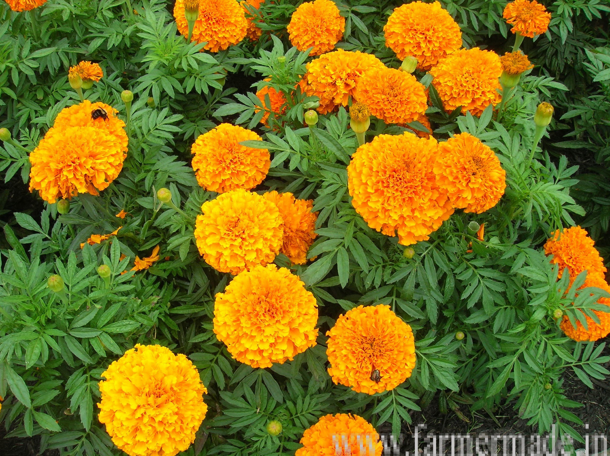

झेंडू विषयी माहिती

प्रस्तावना
झेंडू हे फक्त राज्यात नव्हे तर संपूर्ण देशात महत्वाचे फुलपिक आहे. या फुलांचा उपयोग फुलांच्या माळा करणे, व्यासपीठ
सजविणे यासाठी मोठ्या प्रमाणावर केला जातो.
याशिवाय निरनिराळया पुष्प रचनेमध्ये, बगीच्यांमध्ये रस्त्यालगत, तसेच
कुंड्यांमध्ये लागवड केली जाते. झेंडूचे पीक राज्यात तिन्ही हंगामात घेतले जाते व त्यास मोठ्या प्रमाणावर मागणी
असते. झेंडूचा उपयोग मुख्यत्वे करून सुट्या फुलान्साठीच केला जातो.
जमीन व हवामान
झेंडू हे मुख्यत्वाने थंड हवामानाचे पिक आहे. थंड हवामानात झेंडूची वाढ व फुलांचा दर्जा चांगला असतो. वातावरणाच्या
परिस्थितीनुसार झेंडूची लागवड पावसाळी, हिवाळी व उन्हाळी या तीनही हंगामात केली जाते.
आफ्रिकन झेंडूची लागवड
फेब्रुवारीच्या पहिल्या आठवड्यानंतर व जुलैच्या पहिल्या आठवड्यापूर्वी केल्यास उत्पादनावर आणि फुलांच्या दर्जावर
चांगला परिणाम होतो.
त्यामुळे जुलैच्या पहिल्या आठवड्यापासून १५ दिवसाच्या अंतराने लागवड केल्यास ऑक्टोबर ते एप्रिल
या कालावधीत भरपूर व दर्जेदार उत्पादन मिळते. परंतु सर्वात जास्त उत्पादन सप्टेंबर मध्ये लागवड केलेल्या झेन्दुपासून
मिळते.
झेंडूची लागवड निरनिराळ्या प्रकारच्या जमिनीत करता येते. झेन्दुसाठी सुपीक, पाणी धरून ठेवणारी परंतु पाण्याचा योग्य
निचरा होणारी जमीन चांगली मानवते.
ज्या जमिनीचा सामू ७.० ते ७.६ इतका आहे त्या जमिनीत झेंडूचे पीक चांगले येते.
झेंडू या पिकांस भरपूर सूर्यप्रकाश आवश्यक आहे. सावलीमध्ये झाडांची वाढ चांगली होते परंतु फुले येत नाहीत.
जाती
अ) आफ्रिकन झेंडू:
या प्रकारची झेन्दुंची झुडुपे उंच वाढतात. झुडूप काटक असते. पावसालीची हवामानात झुडुपे १०० ते १५० से. मी. पर्यंत
उंच वाढतात. फुलांचा रंग पिवळा, फिकट पिवळा, नारंगी असतो.
या प्रकारांमध्ये पुढीलप्रमाणे जातींचा समावेश होतो. जायंट
डबल, आफ्रिकन यलो, ऑरेंज, अर्ली यलो, अर्ली ऑरेंज, गियाना गोल्ड, क्रॅकर जॅक, ऑरेंज ट्रेझंट, बंगलोर लोकल, दिशी
सनशाईन, आफ्रिकन टॉल डबल, मिक्स्ड, यलो सुप्रीम, हवाई, स्पॅन गोल्ड, अलास्का, इत्यादी
ब) फ्रेंच झेंडू:
या प्रकारातील झेन्डूंची झुडुपे उंचीला कमी असतात व झुडुपासारखी वाढतात. झुडुपांची उन्ह्ची ३० ते ४० से. मी. असते.
फुलांचा आकार लहान मध्यम असून अनेक रंगाची फुले असतात.
या प्रकारातील जाती कुंडीत, बागेत, रस्त्याच्या दुतर्फा, तसेच
फुलांचा गालीचा तयार करण्यासाठी, हिरवळीच्या कडा सुशोभीकरणासाठी लावतात. या प्रकारामध्ये पुढीलप्रमाणे जातींचा
समावेश होतो. यलो बॉय, हार्मोनी बॉय, लिटल डेव्हिल, बायकलर, बटर स्कॉच, स्प्रे, लेमन ड्वार्फ यलो, रेड मारिटा,
हार्मोनी, रॉयल बेंगाल, क्विन, सोफिया, इत्यादी.
सुधारित व संकरीत जाती
पुसा नारंगी, (क्रॅकर जॅक जर गोल्डन जुबिली):-
या जातीस लागवडीनंतर १२३-१३६ दिवसानंतर फुले येतात. झुडुप ७३ से. मी. उंच वाढते व वाढ देखील जोमदार असते. फुले
नारंगी रंगाची व ७ ते ८ से. मी. व्यासाची असतात. हेक्टरी उत्पादन ३५ मे. टन / हेक्टर याप्रमाणे येते.
पुसा बसंती (गोल्डन यलो जरसन जायंट):-
या जातीस १३५ ते १४५ दिवसात फुले येतात. झुडुप ५९ से. मी. ऊंच व जोमदार वाढते. फुले पिवळ्या रंगाची असून ६ ते ९ से.
मी. व्यासाची असतात. प्रत्येक झुडुप सरासरी ५८ फुले देते. कुंड्यात लागवड करण्यासाठी ही जात जास्त योग्य आहे.
एम. डी. यू.१:-
झुडुपे मध्यम उंचीची असतात. ऊंची ६५ से. मी. पर्यत वाढते. या झुडुपास सरासरी ९७ फुले येतात व ४१ ते ४५ मे. टन प्रती
हेक्टर याप्रमाणे उत्पादन येते. फुलांचा रंग नारंगी असतो व ७ से. मी. व्यासाची असतात.
लागवड पूर्व तयारी
लागवडीपूर्व जमिनीची २ ते ३ वेळा खोलवर नांगरट, २ ते ३ वेळा फणणी करून धसकटे व हरळीच्या काशा वेचून जमीन स्वच्छ व
भुसभुशीत करावी. त्यानंतर हेक्टरी २५ ते ३० टन चांगले कुजलेले शेणखत मिसळून ५० किलो नत्र, २०० किलो. स्फुरद व २००
किलो पालाश लागवडीपूर्वीच जमीनीच पूर्णपणे मिसळून घ्यावे. व नंतर ६० से. मी. अंतरावर सरी वरंबे तयार करून घ्यावेत व
त्यानंतर सर्यासची नाके तोडून पाणी पुराव्थाच्या सोयीप्रमाणे वाफे करून घ्यावेत.
लागवड
झेंडूची लागवड करताना ६० से. मी. अंतरावर घेतलेल्या सरीच्या मध्यभागी ३० से. मी. इतके दोन रोपांमधील अंतर ठेवून
लागवड करावी. ६० X ३० से. मी. अंतरावर लागवड केल्यास हेक्टरी ४०,००० रोपे लागतात. लागवड करतांना भरपूर पाण्यामध्ये व
सायंकाळी ४ नंतर लागवड करावी. म्हणजे रोपांची मर होत नाही.
आंतरमशागत
लागवडीनंतर १५ दिवसांनी पहिली खुरपणी करावी. त्यावेळी नत्र खताचा दुसरा हप्ता ५० किलो प्रति हेक्टर याप्रमाणात
द्यावा. लागवड केलेला वरंबा फोडून दुसऱ्या वाराम्ब्यास माती लावावी व झाड मध्यभागी घ्यावे. त्याचवेळी रोपाचा शेंडा
खुडावा म्हणजे झेंडूच्या रोपास भरपूर फांद्या फुटतात व उत्पादन चांगले येते.
खते
आफ्रिकन आणि फ्रेंच जातींसाठी शेणखत २५ ते ३० मे. टन प्रति हेक्टर याप्रमाणे तसेच १०० किलो नत्र, २०० किलो स्फुरद व
२०० किलो पालाश याप्रमाणे खते दयावी. संकरीत जातींची लागवड करायची असल्यास प्रति हेक्टर नत्र २५० किलो, स्फुरद ४००
किलो याप्रमाणे लागवडीपूर्वीच जमिनीत पूर्णपणे मिसळून खते द्यावीन.
रोपवाटिका
रोपवाटिका करण्यापूर्वी ३ X १ मी. या आकारमानाचे व २० से. मी. उंचीचे २० गादीवाफे करावेत. त्यामध्ये प्रत्येक
वाफ्यात १९:१९:१९ हे ५० ग्रॅम (रासायनिक खत) व ८ ते १० किलो चाळलेले शेणखत मिसळावे. त्यात ५ ग्रॅम प्रति चौ. मी.
याप्रमाणे फोरेट मिसळून घ्यावे.
१० से. मी. अंतरावर दक्षिण-उत्तर ओळी खुरप्याच्या सहाय्याने ०.५ से. मी. खोल करून
घ्याव्यात त्यामध्ये दोन बियाण्यातील अंतर १ इंच ठेवून बियाणे पेरावे.
हे बियाणे वस्रगाळ केलेली माती, शेणखत व वाळू
यांचे २:१:१ याप्रमाणे मिश्रण करून या मिश्रणाने बी झाकून टाकावे. त्यावर रोज सकाळी व सायंकाळी पाण्याचा फवारा
मारावा व बियाणे उगवेपर्यंत गादी वाफे, गवत पालापाचोळा किंवा पाने झाकून घ्यावे. वाफे नेहमी ओलसर म्हणजे वापसा
अवस्थेत ठेवावीत.
त्यापेक्षा जास्त पाणी देखील होऊ देऊ नये, किंवा पाणी कमी देखील पडू देऊ नये. रोपे तयार झाल्यानंतर
मुळांसहित काढावीत. वाफे वापसा अवस्थेत असतानाच रोपे काढावीत. बियाणे पेरणीपासून २५ ते ३० दिवसात रोपे लागवडीस तयार
होतात.
पीक संरक्षण (रोपवाटिका)
सुदृढ रोपे मिळवण्यासाठी वाफ्यातील रोपांवर उगवणीनंतर एका आठवड्याने कार्बन ड्रेझीम २० ग्रॅम किंवा कॅपटॉप २० ग्रॅम
प्रति १० लिटर पाणी याप्रमाणे फवारणी करावी. त्याचप्रमाणे अंतरप्रवाही कीटकनाशके व बुरशीनाशके यांच्या आठ दिवसांच्या
अंतराने ३ ते ४ फवारण्या द्याव्यात.
पाणी
हंगाम झेंडूचे पीक घेतले असल्यास पावसाचा ताण पडल्यास १-२ वेळा १० ते १५ दिवसांच्या अंतराने पाणी द्यावे. हिवाळी
हंगामातील पिकासाठी ८ ते १० दिवसांच्या अंतराने पाणी द्यावे व उन्हाळी हंगामासाठी ५ ते ७ दिवसांनी पाणी द्यावे.
कळ्या लागल्यापासून फुलांची काढणी होईपर्यंत पिकास पाण्याचा ताण पडू देऊ नये.
पीक संरक्षण
झेंडू या पिकावर मावा, तुडतुडे, पांढरी माशी, लाल कोळी, नाग अळी, अळी, कटवर्म या किडींचा व करपा, मर या रोगांचा
प्रादुर्भाव दिसून येतो. त्यासाठी पुढीलपैकी कोणतेही एक किताक्नाषक / बुरशीनाशक फवारावे. फवारणी करतांना प्रत्येक
फवारणीमध्ये ५ मी. ली. प्रती १० लिटर पाणी या प्रमाणात स्टिकर्स मिसळावे.
उत्पादन
झेंडूंच्या फुलांचे हेक्टरी १२ ते १५ टन उत्पादन मिळते. संकरीत जातींची लागवड केल्यास प्रति हेक्टरी १८ ते २० टन
उत्पादन मिळते.
हे लक्षात ठेवा
बाजारपेठेत सतत फुलांचा पुरवठा होण्यासाठी १५ दिवसांच्या अंतराने लागवड करा.
रोपे तयार करतांना जास्त काळजी घ्या. सुदृढ रोपांचीच लागवडीसाठी निवड करा.
ज्या जमिनीत सुतकृमींचा प्रादुर्भाव जास्त आहे, त्या ठिकाणी झेंडूची लागवड करा.
पाणथळ जमिनीत झेंडूची लागवड करू नका.